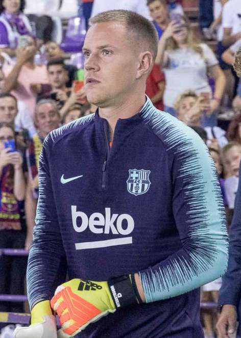
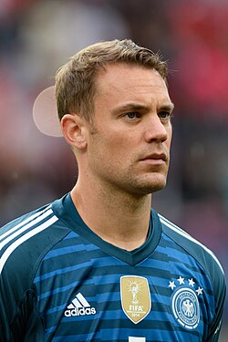
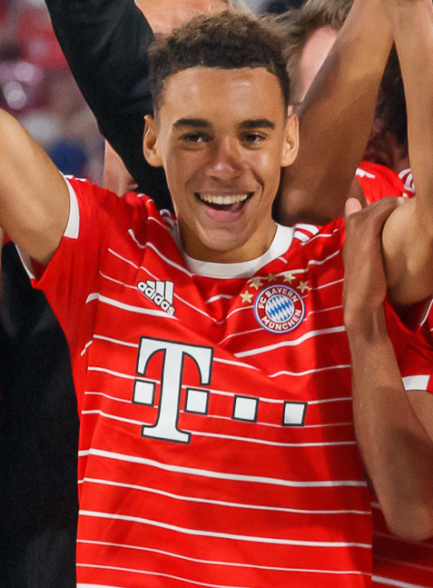
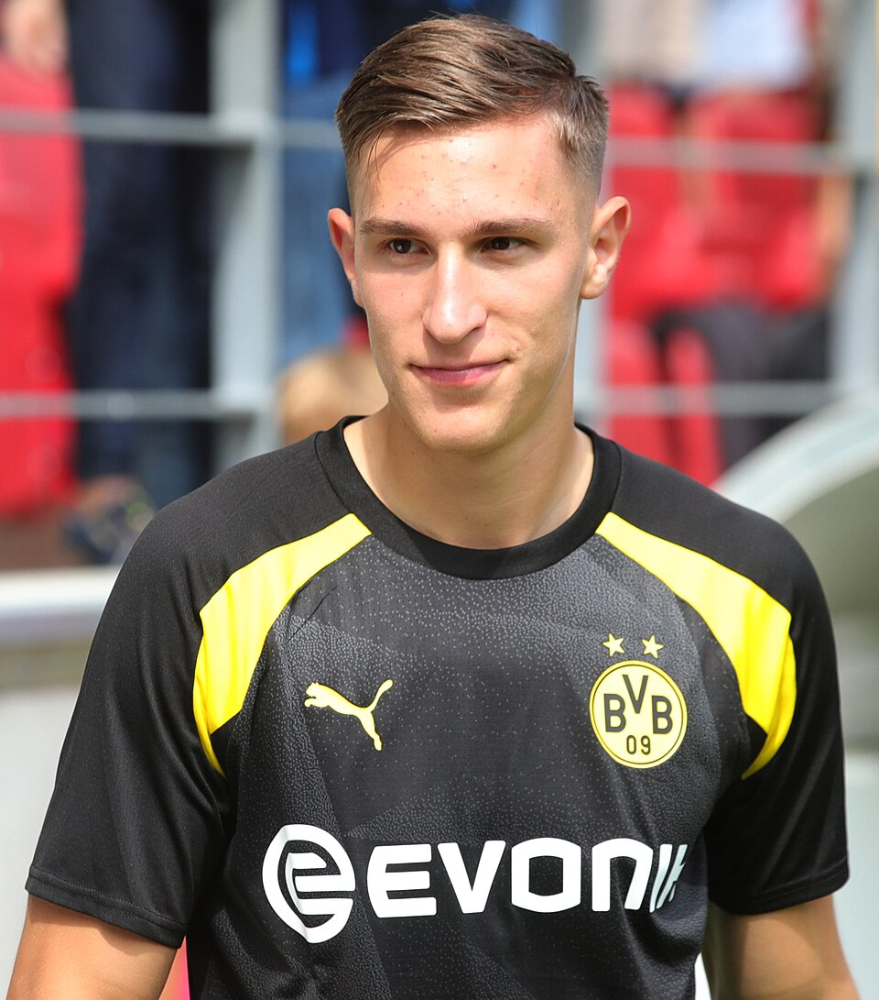
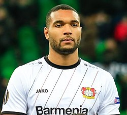
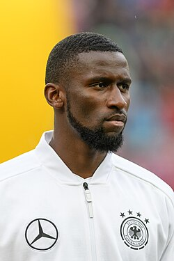
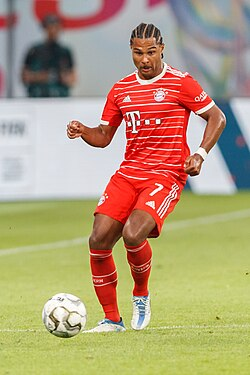
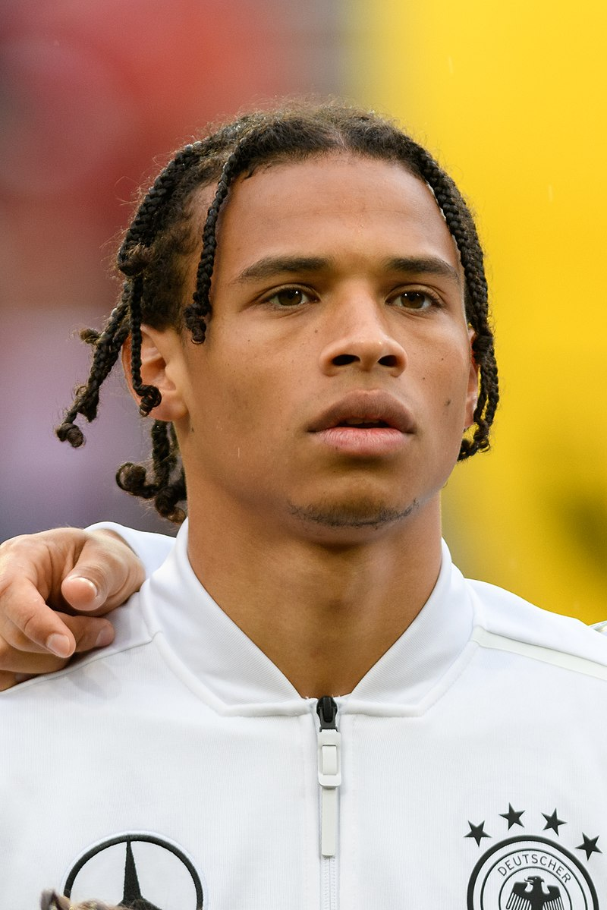
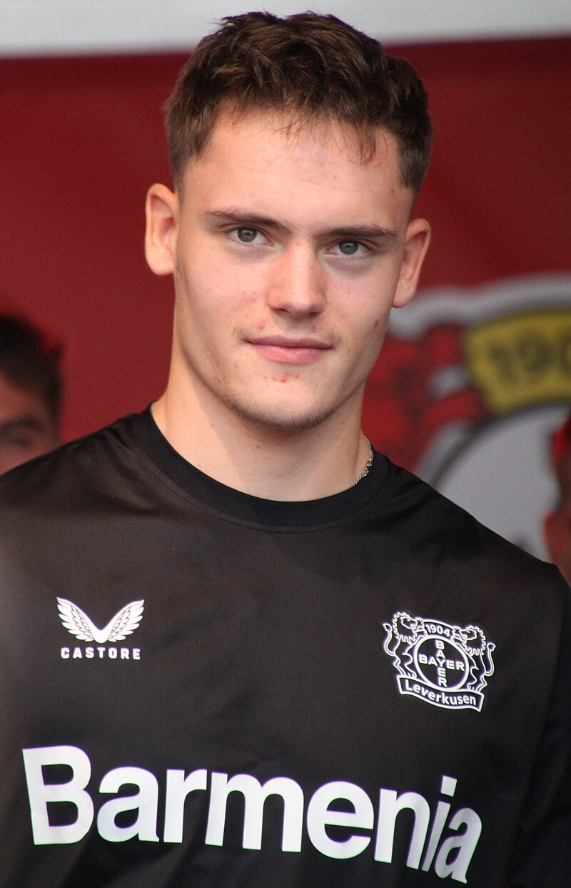
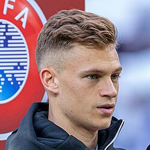

| Nombre | Posición | Edad | Bibliografía | Portada |
|---|---|---|---|---|
| Marc-André ter Stegen | Portero | 32 |
Portero titular del FC Barcelona y de Alemania, reconocido por su agilidad, reflejos y seguridad bajo los palos. |
 |
| Manuel Neuer | Portero | 37 |
Legendario portero del Bayern Múnich y capitán histórico de Alemania, famoso por su estilo de portero líbero y liderazgo. |
 |
| Jamal Musiala | Centrocampista / Extremo | 20 |
Joven talento del Bayern Múnich, destaca por su creatividad, velocidad y capacidad de desequilibrar defensas rivales. |
 |
| Nico Schlotterbeck | Defensa central | 24 |
Defensa sólido del Borussia Dortmund, con gran anticipación y presencia física. Pieza clave en la defensa alemana. |
 |
| Leon Goretzka | Centrocampista | 28 |
Mediocampista del Bayern Múnich, fuerte en recuperación, llegada al área y capacidad goleadora desde segunda línea. |
|
| Robin Koch | Defensa central | 27 |
Defensa central del Eintracht Frankfurt, destacando por su anticipación, juego aéreo y solidez defensiva. |
|
| Jonathan Tah | Defensa central | 26 |
Defensor del Bayer Leverkusen, rápido, fuerte y confiable en la zaga, con buen juego aéreo y marca. |
 |
| Antonio Rüdiger | Defensa central | 30 |
Defensa central del Real Madrid, con experiencia internacional, físico imponente y capacidad de liderazgo en defensa. |
 |
| Serge Gnabry | Delantero / Extremo | 28 |
Extremo del Bayern Múnich, rápido y hábil, destaca por su capacidad goleadora y desequilibrio en ataque. |
 |
| Leroy Sané | Extremo | 28 |
Delantero del Galatasaray, conocido por su velocidad, regate y capacidad de asistir y marcar goles en la Superliga turca. |
 |
| Florian Wirtz | Centrocampista | 20 |
Mediocampista del Liverpool, joven promesa con gran visión de juego, técnica y creatividad ofensiva en la Premier League. |
 |
| Joshua Kimmich | Centrocampista / Defensa | 28 |
Mediocampista del Bayern Múnich, líder en el centro del campo, excelente en recuperación, pase y organización del juego. |
 |